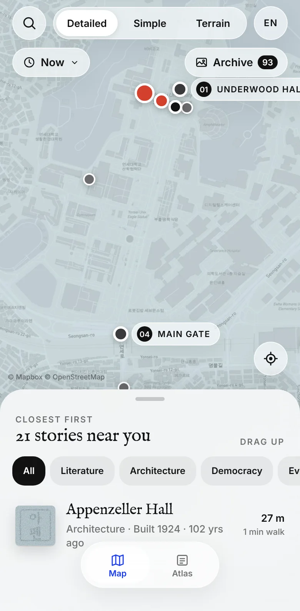
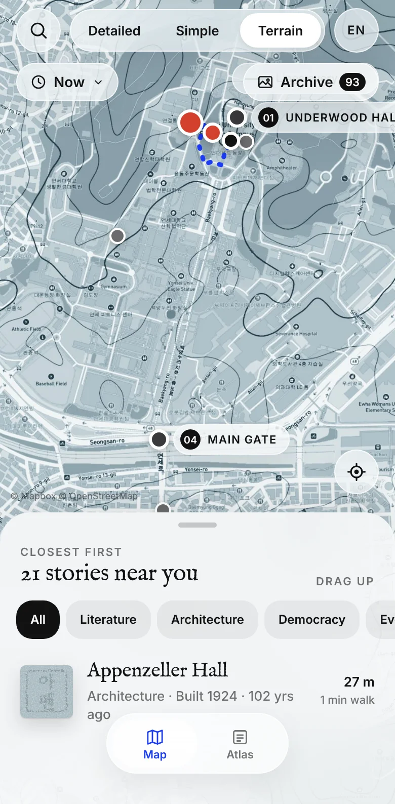
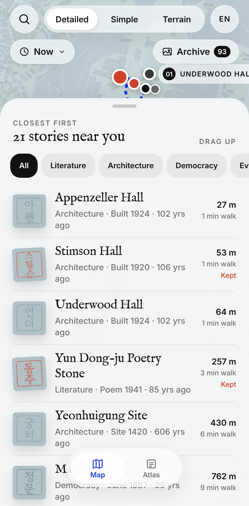

01
Map
Detailed, simple and terrain styles; every pin is a place with a story.


03
A history map of Sinchon
Try the app
The working prototype. Swipe in, open the map, change the era and read the stories pinned around campus.
Overview
A history map of Sinchon for visitors: walk around Yonsei, Ewha and Sinchon station and read what happened where, on a map that also gets you there.
BriefVisitors come for the photogenic spots without knowing the history behind them, and they already live in their map apps. Put that history on a map they can navigate with.
ApproachTwenty-one pins, each with a one-minute story and a longer version, archive photos from the Seoul Historical Archive, maps from 1942, 1927 and 1861, three map styles, and English and Korean.
2 steps
Detailed, simple and terrain styles; every pin is a place with a story.


The closest stories first, filtered by literature, architecture and democracy.
